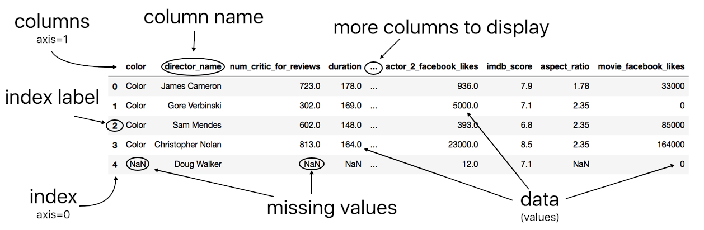

Pandas Introduction#
Pandas is probably the module/package with which we are going to interact the most. It is specifically defined to read, transform, query data in a table format.
Pandas is built on top of the Numpy, the main numerical package used in Python, so you might benefit from being familiar with this package.
The two main components (=data structures) in Pandas are the DataFrame(basically a table), and theSeries.
A
DataFrameis made of severalSeriesthat share a common index/es .A
Seriesrefers to one of the columns in theDataFrame(though it can also refer to a row). Aserieshas also an index/es.
Caution
Beware that often Series or a DataFrame, have functions with the same name.
There are many different ways to generate DataFrames from scratch. We will consider a few here but most often you will be reading data from a file (like Excel or some text-delimited file) into a DataFrame directly.
First things first, we need to import the Pandas package. We will use the commonly used abbreviation pd to import the package
# import pandas
import pandas as pd
Pandas series#
A Pandas series is similar to a list with an index, used to refer to each entry, attached to it.
# create a series using wins
win = pd.Series(data = [26,25,19,26,22,21,28,23,22])
win
0 26
1 25
2 19
3 26
4 22
5 21
6 28
7 23
8 22
dtype: int64
Retrieve the index
# retrieve the index of series
win.index
RangeIndex(start=0, stop=9, step=1)
Pandas has different types of indexes. By default, the index is an integer numerical range type.
You can use .value to return a numpy array with all the values in the Series.
# return only the values (as a numpy array)
win.values
array([26, 25, 19, 26, 22, 21, 28, 23, 22])
You can specify both the data and the index when creating a Series.
# create a series using as data wins and as index years
win = pd.Series(data= [26,25,19,26,22,21,28,23,22],
index= [2020, 2020, 2020, 2019, 2019, 2019, 2018, 2018, 2018])
win
2020 26
2020 25
2020 19
2019 26
2019 22
2019 21
2018 28
2018 23
2018 22
dtype: int64
# retrieve index
win.index
Index([2020, 2020, 2020, 2019, 2019, 2019, 2018, 2018, 2018], dtype='int64')
In this case, we are indexing the number of wins by the year these occured. So, if you wanted to retrieve all of the wins that happened in 2020, you can type the following .
# retrieve wins in 2020
win[2020]
2020 26
2020 25
2020 19
dtype: int64
Reset Index#
It is always possible to reset an index, i.e. this creates a new series with the old index and inserts a new default index.
# reset index
win.reset_index()
| index | 0 | |
|---|---|---|
| 0 | 2020 | 26 |
| 1 | 2020 | 25 |
| 2 | 2020 | 19 |
| 3 | 2019 | 26 |
| 4 | 2019 | 22 |
| 5 | 2019 | 21 |
| 6 | 2018 | 28 |
| 7 | 2018 | 23 |
| 8 | 2018 | 22 |
Pandas DataFrame#
The easiest way to generate a Pandas DataFrame is using a Python Dictionary
df = pd.DataFrame(data = {'team' : ['RealMadrid','FCBarcelona', 'Sevilla', 'FCBarcelona','AtleticoMadrid',
'RealMadrid', 'FCBarcelona','AtleticoMadrid', 'RealMadrid'],
'year' : [2020, 2020, 2020, 2019, 2019, 2019, 2018, 2018, 2018],
'wins' : [26,25,19,26,22,21,28,23,22],
'draws' : [3,6,6,9,10,5,9,10,10],
'losses': [3,6,6,3,6,12,1,5,6]})
df
| team | year | wins | draws | losses | |
|---|---|---|---|---|---|
| 0 | RealMadrid | 2020 | 26 | 3 | 3 |
| 1 | FCBarcelona | 2020 | 25 | 6 | 6 |
| 2 | Sevilla | 2020 | 19 | 6 | 6 |
| 3 | FCBarcelona | 2019 | 26 | 9 | 3 |
| 4 | AtleticoMadrid | 2019 | 22 | 10 | 6 |
| 5 | RealMadrid | 2019 | 21 | 5 | 12 |
| 6 | FCBarcelona | 2018 | 28 | 9 | 1 |
| 7 | AtleticoMadrid | 2018 | 23 | 10 | 5 |
| 8 | RealMadrid | 2018 | 22 | 10 | 6 |
Anatomy of a DataFrame#
The following diagram identifies the name parts of a Pandas DataFrame:

Parts#
Let’s explore some of the parts of the DataFrame we created above. Let’s recover the names of the columns,
# print the columns of the DataFrame
df.columns
Index(['team', 'year', 'wins', 'draws', 'losses'], dtype='object')
Now the index,
# print the index of the DataFrame
df.index
RangeIndex(start=0, stop=9, step=1)
What about the values?
# print the only the values (as numpy array of arrays)
df.values
array([['RealMadrid', 2020, 26, 3, 3],
['FCBarcelona', 2020, 25, 6, 6],
['Sevilla', 2020, 19, 6, 6],
['FCBarcelona', 2019, 26, 9, 3],
['AtleticoMadrid', 2019, 22, 10, 6],
['RealMadrid', 2019, 21, 5, 12],
['FCBarcelona', 2018, 28, 9, 1],
['AtleticoMadrid', 2018, 23, 10, 5],
['RealMadrid', 2018, 22, 10, 6]], dtype=object)
Data Types#
When Pandas reads information into a DataFrame, it tries to guess what type of data (e.g. numeric, text, so on) is reading in order to store it efficiently. Getting the right data type is important, not only because of storing efficiency, but also because it dictates what kind of operations we can use with them. Here are the main Pandas data types,
Type |
Explanation |
|---|---|
object |
string |
int64 |
integer |
float64 |
float |
bool |
boolean |
datetime64 |
date time |
timedelta[ns] |
time interval between two datetimes |
category |
list of text values |
When Pandas cannot recognize the data type it will default to object. Use .dtype property of a DataFrame to list all of its data types,
df.dtypes
team object
year int64
wins int64
draws int64
losses int64
dtype: object
You can often switch from one data type to another using the Pandas’s method .astype().
df.wins.astype('float64')
0 26.0
1 25.0
2 19.0
3 26.0
4 22.0
5 21.0
6 28.0
7 23.0
8 22.0
Name: wins, dtype: float64
Create a New Column/Series#
There are several ways to generate a new column or series in Pandas. The simplest is by simply adding a new column as you would add a new entry in a Python dictionary. Let’s create a new ‘dummy’ column we will delete later on.
df['Erase Me']= [1,0,1,0,1,0,1,0,1]
df
| team | year | wins | draws | losses | Erase Me | |
|---|---|---|---|---|---|---|
| 0 | RealMadrid | 2020 | 26 | 3 | 3 | 1 |
| 1 | FCBarcelona | 2020 | 25 | 6 | 6 | 0 |
| 2 | Sevilla | 2020 | 19 | 6 | 6 | 1 |
| 3 | FCBarcelona | 2019 | 26 | 9 | 3 | 0 |
| 4 | AtleticoMadrid | 2019 | 22 | 10 | 6 | 1 |
| 5 | RealMadrid | 2019 | 21 | 5 | 12 | 0 |
| 6 | FCBarcelona | 2018 | 28 | 9 | 1 | 1 |
| 7 | AtleticoMadrid | 2018 | 23 | 10 | 5 | 0 |
| 8 | RealMadrid | 2018 | 22 | 10 | 6 | 1 |
Another way is by combining ENTIRE columns in a DataFrame. For instance, we can generate a new column that provides a simple measure of failure for each team based on their wins, draws and losses.
\(failure = \frac{draws + losses}{wins}\)
The larger the index of \(failure\) the less successful was a team.
# creating a new DataFrame column # df['failure'] = (df['draws'] + df['losses']) / df['wins']
df['failure'] = (df.draws + df.losses) / df.wins
df
| team | year | wins | draws | losses | Erase Me | failure | |
|---|---|---|---|---|---|---|---|
| 0 | RealMadrid | 2020 | 26 | 3 | 3 | 1 | 0.230769 |
| 1 | FCBarcelona | 2020 | 25 | 6 | 6 | 0 | 0.480000 |
| 2 | Sevilla | 2020 | 19 | 6 | 6 | 1 | 0.631579 |
| 3 | FCBarcelona | 2019 | 26 | 9 | 3 | 0 | 0.461538 |
| 4 | AtleticoMadrid | 2019 | 22 | 10 | 6 | 1 | 0.727273 |
| 5 | RealMadrid | 2019 | 21 | 5 | 12 | 0 | 0.809524 |
| 6 | FCBarcelona | 2018 | 28 | 9 | 1 | 1 | 0.357143 |
| 7 | AtleticoMadrid | 2018 | 23 | 10 | 5 | 0 | 0.652174 |
| 8 | RealMadrid | 2018 | 22 | 10 | 6 | 1 | 0.727273 |
Sorting a DataFrame#
We can use the .sort_values() function to sort the entries in a DataFrame using one or several columns. Here you will sort them by the newly created failure index in descending order (by default Pandas sorts in ascending order).
# Let's sort teams based on the failure index from worst to better
df.sort_values('failure',ascending= False)
| team | year | wins | draws | losses | Erase Me | failure | |
|---|---|---|---|---|---|---|---|
| 5 | RealMadrid | 2019 | 21 | 5 | 12 | 0 | 0.809524 |
| 8 | RealMadrid | 2018 | 22 | 10 | 6 | 1 | 0.727273 |
| 4 | AtleticoMadrid | 2019 | 22 | 10 | 6 | 1 | 0.727273 |
| 7 | AtleticoMadrid | 2018 | 23 | 10 | 5 | 0 | 0.652174 |
| 2 | Sevilla | 2020 | 19 | 6 | 6 | 1 | 0.631579 |
| 1 | FCBarcelona | 2020 | 25 | 6 | 6 | 0 | 0.480000 |
| 3 | FCBarcelona | 2019 | 26 | 9 | 3 | 0 | 0.461538 |
| 6 | FCBarcelona | 2018 | 28 | 9 | 1 | 1 | 0.357143 |
| 0 | RealMadrid | 2020 | 26 | 3 | 3 | 1 | 0.230769 |
Deleting a column/series#
To delete a column use Pandas method .drop(),
# delete column failure
df.drop(columns = 'Erase Me')
| team | year | wins | draws | losses | failure | |
|---|---|---|---|---|---|---|
| 0 | RealMadrid | 2020 | 26 | 3 | 3 | 0.230769 |
| 1 | FCBarcelona | 2020 | 25 | 6 | 6 | 0.480000 |
| 2 | Sevilla | 2020 | 19 | 6 | 6 | 0.631579 |
| 3 | FCBarcelona | 2019 | 26 | 9 | 3 | 0.461538 |
| 4 | AtleticoMadrid | 2019 | 22 | 10 | 6 | 0.727273 |
| 5 | RealMadrid | 2019 | 21 | 5 | 12 | 0.809524 |
| 6 | FCBarcelona | 2018 | 28 | 9 | 1 | 0.357143 |
| 7 | AtleticoMadrid | 2018 | 23 | 10 | 5 | 0.652174 |
| 8 | RealMadrid | 2018 | 22 | 10 | 6 | 0.727273 |
Caution
The above method has not actually changed the original DataFrame yet. In order to do this, you need to overwrite the original DataFrame with the one obtained after running the method.
df
| team | year | wins | draws | losses | Erase Me | failure | |
|---|---|---|---|---|---|---|---|
| 0 | RealMadrid | 2020 | 26 | 3 | 3 | 1 | 0.230769 |
| 1 | FCBarcelona | 2020 | 25 | 6 | 6 | 0 | 0.480000 |
| 2 | Sevilla | 2020 | 19 | 6 | 6 | 1 | 0.631579 |
| 3 | FCBarcelona | 2019 | 26 | 9 | 3 | 0 | 0.461538 |
| 4 | AtleticoMadrid | 2019 | 22 | 10 | 6 | 1 | 0.727273 |
| 5 | RealMadrid | 2019 | 21 | 5 | 12 | 0 | 0.809524 |
| 6 | FCBarcelona | 2018 | 28 | 9 | 1 | 1 | 0.357143 |
| 7 | AtleticoMadrid | 2018 | 23 | 10 | 5 | 0 | 0.652174 |
| 8 | RealMadrid | 2018 | 22 | 10 | 6 | 1 | 0.727273 |
df = df.drop(columns = 'Erase Me')
df
| team | year | wins | draws | losses | failure | |
|---|---|---|---|---|---|---|
| 0 | RealMadrid | 2020 | 26 | 3 | 3 | 0.230769 |
| 1 | FCBarcelona | 2020 | 25 | 6 | 6 | 0.480000 |
| 2 | Sevilla | 2020 | 19 | 6 | 6 | 0.631579 |
| 3 | FCBarcelona | 2019 | 26 | 9 | 3 | 0.461538 |
| 4 | AtleticoMadrid | 2019 | 22 | 10 | 6 | 0.727273 |
| 5 | RealMadrid | 2019 | 21 | 5 | 12 | 0.809524 |
| 6 | FCBarcelona | 2018 | 28 | 9 | 1 | 0.357143 |
| 7 | AtleticoMadrid | 2018 | 23 | 10 | 5 | 0.652174 |
| 8 | RealMadrid | 2018 | 22 | 10 | 6 | 0.727273 |
Renaming a Column/s#
To rename one or several columns we use Pandas’ .rename() method. This method uses a dictionary to ‘map’ the old name/s to the new one/s.
df.rename(columns = {'team':'club', 'failure':'f-index'})
| club | year | wins | draws | losses | f-index | |
|---|---|---|---|---|---|---|
| 0 | RealMadrid | 2020 | 26 | 3 | 3 | 0.230769 |
| 1 | FCBarcelona | 2020 | 25 | 6 | 6 | 0.480000 |
| 2 | Sevilla | 2020 | 19 | 6 | 6 | 0.631579 |
| 3 | FCBarcelona | 2019 | 26 | 9 | 3 | 0.461538 |
| 4 | AtleticoMadrid | 2019 | 22 | 10 | 6 | 0.727273 |
| 5 | RealMadrid | 2019 | 21 | 5 | 12 | 0.809524 |
| 6 | FCBarcelona | 2018 | 28 | 9 | 1 | 0.357143 |
| 7 | AtleticoMadrid | 2018 | 23 | 10 | 5 | 0.652174 |
| 8 | RealMadrid | 2018 | 22 | 10 | 6 | 0.727273 |